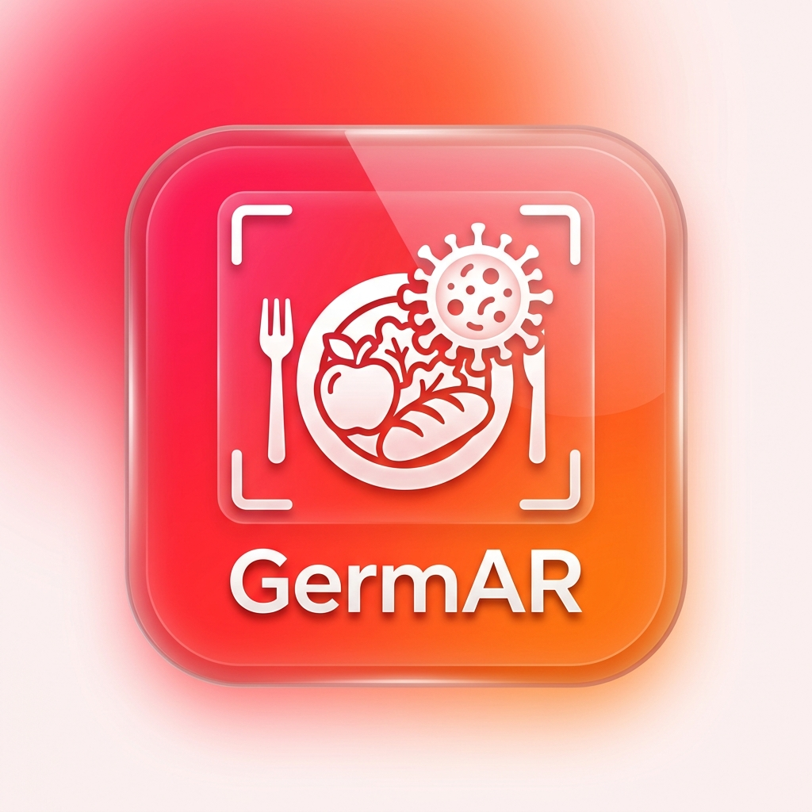

GERMAR AR
Pengesan Patogen & Keselamatan Makanan
MULAKAN
GERMAR IMAGING SYSTEM
Pusing: Heret 1 Jari | Saiz: Cubit 2 Jari
INFO PATOGEN
×
Nama Patogen
Nama Makanan
Habitat Asal
Maklumat habitat...
Cara Pemindahan
Maklumat cara pemindahan...
Simptom & Tanda
Maklumat simptom...
Cara Kawalan & Pencegahan
Maklumat pencegahan...